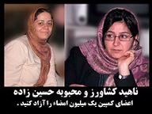

|
|
|
Browsing
Contact Us |
Campaigners |
Face to Face |
Tribune |
Interview |
News |
On the Web |
One Million |
Report
Farsi | Français | German | Italian | Spanish | العربية Also in this section
|
 Open letter signed by more than 1000 political, social and cultural activists to object to the arrest of two women’s activists (Nahid Keshavarz and Mahboubeh Hossein-zadeh)Friday 6 April 2007 IN AUGUST last year, Iranian women’s rights activists launched a campaign demanding an end to the legal discrimination of women under Iranian law. The campaign, which aims to collect one million signatures to demand changes to the legal system, is a follow-up effort to a peaceful protest that took place on June 12, 2006 in Tehran’s Haft-e Tir Square. In recent weeks, the state has arrested several activists as part of a crackdown against the campaign. The following statement was signed by over 1000 prominent Iranian journalists, lawyers, writers, social and political activist, student movement activists, bloggers, academics and researchers in response to the arrests. On Monday April 2, some of the One Million Signatures Campaign members gathered in some of Tehran’s Parks with their families to gather signatures from their compatriots while they were celebrating the thirteenth day of the New Year festival. Attending in public spaces on this special day is an ancient custom that is not forbidden by any law. Gathering signatures, as the most peaceful way to conduct opinion polls of citizens, is not forbidden by any law. It is a custom that has an long record in our country. But, unfortunately on this day, five of the Campaign’s members who gathered in Tehran Lale Park with their families to celebrate the thirteen day of the New Year festival were arrested and transported to Vozara police station. On Tuesday April 3, three of the arrested activists, Sara Imanian, Homayun Nami and Saeede Amin, were released by paying collateral to the revolutionary court. Unfortunately, the other two, Nahid Keshavarz and Mahboubeh Hossein-zadeh, were transported to Evin prison. After 7 months since the beginning of the campaign’s work to change the discriminatory laws, Campaign members have confronted too many violent clashes. There is not any authority in our current laws to arrest the people who gathered the signatures. The arrest process of the security forces and their manner of dealing with the One Million Signatures Campaign activists shows that they are increasing the pressure against all legal and peaceful movements. Therefore, we, the undersigned, while protesting against the pressures, arrests and unfair and anti-human rights behaviour targeted toward civil society activists, demand the immediate and unconditional release of Nahid Keshavarz and Mahboubeh Hossein-zadeh, as activists of the women’s movement and the One Million Signatures Campaign. To view the list of names in Farsi, please visit: http://weforchange.net/spip.php?article536 For more information on One Million Signatures Campaign in Iran, please visit: |